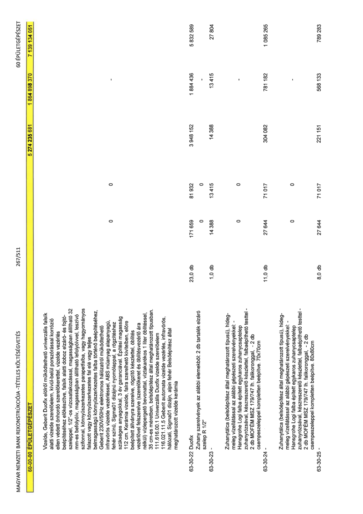

| Tétel | Menny. | Egys. | Anyag e.ár (net HUF) | Díj e.ár (net HUF) | Anyag összesen (net HUF) | Díj összesen (net HUF) | Anyag+Díj összesen (net HUF) |
|---|---|---|---|---|---|---|---|
| 60-00-00 ÉPÜLETGÉPÉSZET | NaN | NaN | 0 | 0 | 5 274 235 681 | 1 864 898 370 | 7 139 134 051 |
| Vizelde, Geberit Duofix elölről működtethető univerzális falsík alatti vizelde szerelőelem, kívül-belül porszórással korrózió ellen védett önhordó szerelőkerettel, vizelde vezérlés beépítéséhez előkészítve, falsík alatti doboz elzáró- és fojtószeleppel, 1/2”-os vízcsatlakozással, magasságban állítható 32 mm-es befolyóív, magasságban állítható lefolyóívvel, leszívó szifonnal, könnyűszerkezetes parapetfalba, vagy hagyományos falazott vagy könnyűszerkezetes fal elé vagy teljes belmagasságú könnyűszerkezetes falba történő beépítéséhez, Geberit 230V/50Hz elektromos hálózatról működtethető infravörös vizelde vezérléssel, ABS műanyag alapanyagú, fehér színű, Sigma01 dizájnú nyomólappal, a rögzítéshez szükséges anyagokkal, 3 év garanciával. Építési magasság 112 cm. Kerámia vizelde, falra szerelhető kivitelben, előre beépített állványra szerelve, rögzítő készlettel, öblítés vezérlővel felszerelve (szerelőkeret és öblítésvezérlő ára nélkül) vízlepergető bevonattal, víztakarékos 1 liter öblítéssel, 35 cm-es méretben, belsőépítész által meghatározott típusban. 111.616.00.1 Univerzális Duofix vizelde szerelőelem 116.021.11.5 Geberit automata vizelde vezérlés, infravörös, hálózati, Sigma01 dizájn, alpin fehér Belsőépítész által meghatározott vizelede kerámia | 0 | 0 | 0 | 0 | 0 | 0 | 0 |
| 63-30-22 Duofix | 23,0 | db | 171 659 | 81 932 | 3 948 152 | 1 884 436 | 5 832 589 |
| Zuhany szerelvények az alábbi elemekből: 2 db tartalék elzáró szelep R 1/2'' | 0 | 0 | 0 | 0 | 0 | 0 | 0 |
| 63-30-23 - | 1,0 | db | 14 388 | 13 415 | 14 388 | 13 415 | 27 804 |
| Zuhanytálca (belsőépítész által meghatározott típusú), hideg-meleg vízellátással az alábbi gépészeti szerelvényekkel: - Hansgrohe Logi falba épített egykaros zuhanycsaptelep zuhanyrózsával, készreszerelő készlettel, falbaépíthető testtel - 2 db MOFÉM MSZ 179/747 lh. falikoronggal, - 2 db csempeszeleppel kompletten beépítve. 70x70cm | 0 | 0 | 0 | 0 | 0 | 0 | 0 |
| 63-30-24 - | 11,0 | db | 27 644 | 71 017 | 304 082 | 781 182 | 1 085 265 |
| Zuhanytálca (belsőépítész által meghatározott típusú), hideg-meleg vízellátással az alábbi gépészeti szerelvényekkel: - Hansgrohe Logi falba épített egykaros zuhanycsaptelep zuhanyrózsával, készreszerelő készlettel, falbaépíthető testtel - 2 db MOFÉM MSZ 179/747 lh. falikoronggal, - 2 db csempeszeleppel kompletten beépítve. 80x80cm | 0 | 0 | 0 | 0 | 0 | 0 | 0 |
| 63-30-25 - | 8,0 | db | 27 644 | 71 017 | 221 151 | 568 133 | 789 283 |
